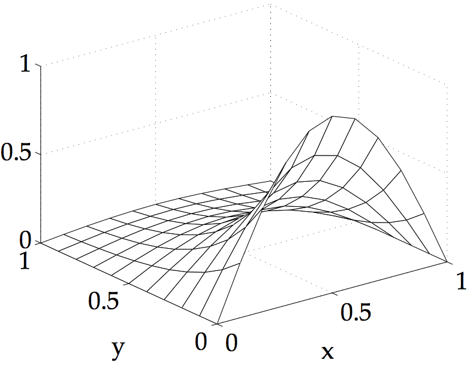
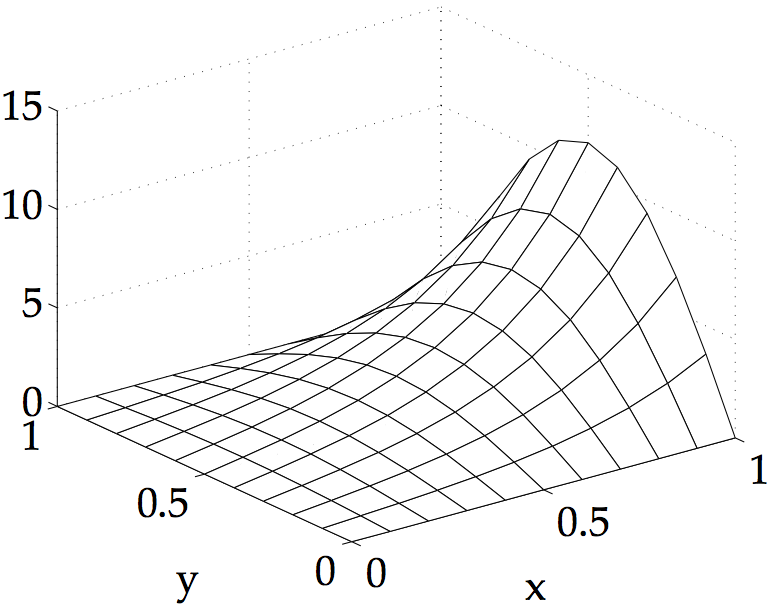
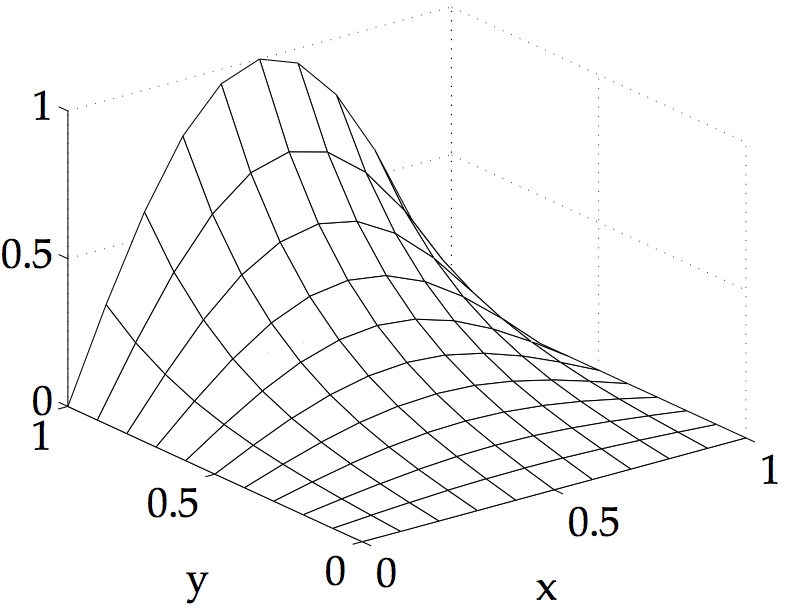
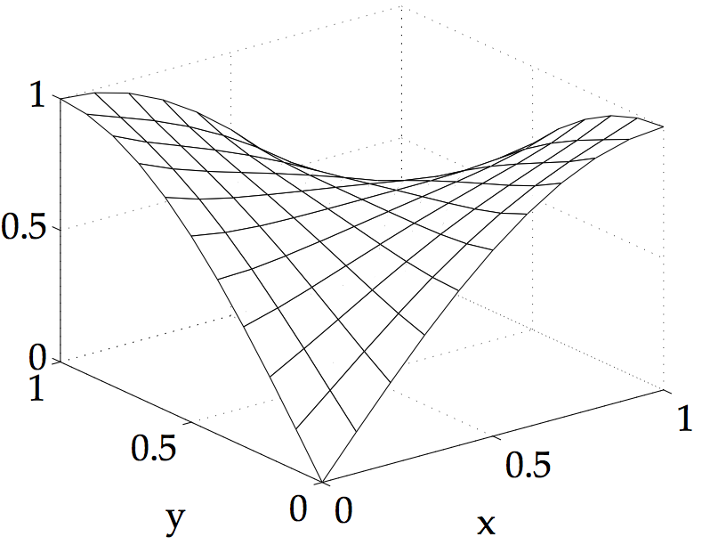
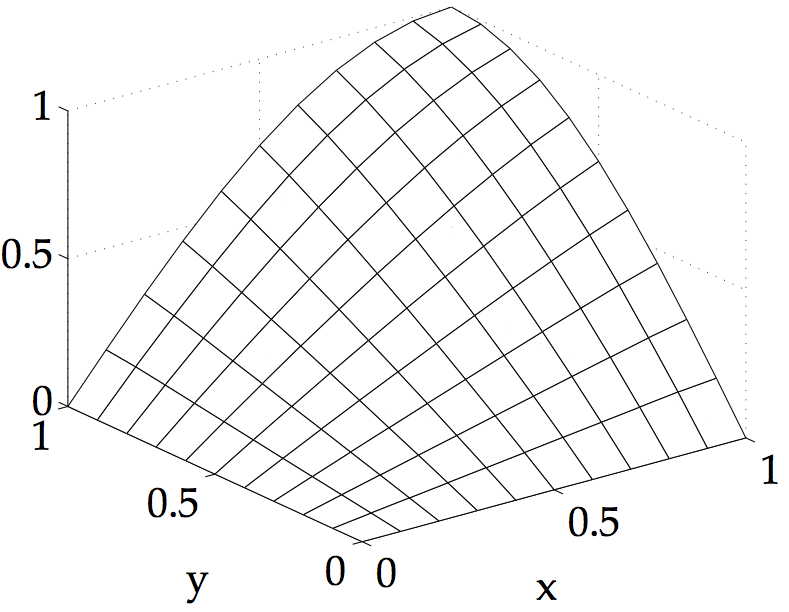
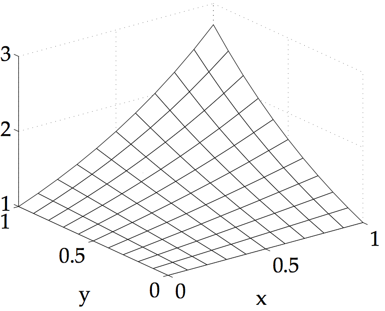
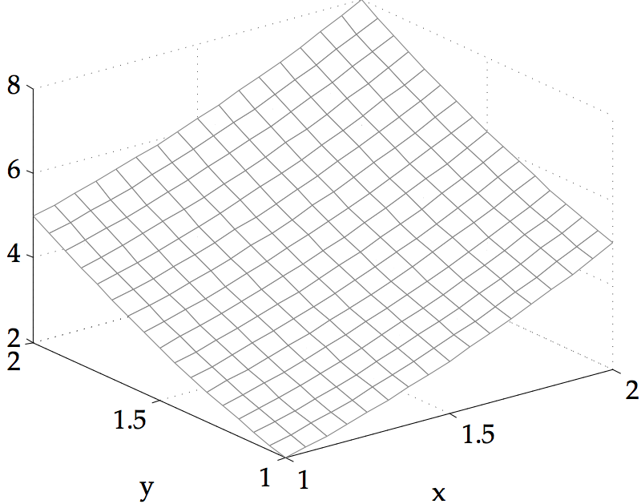
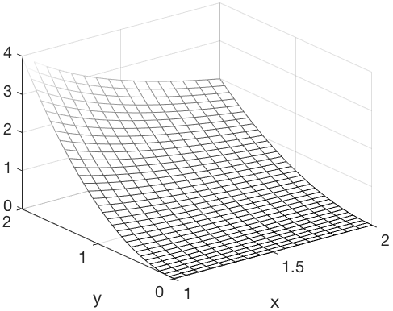
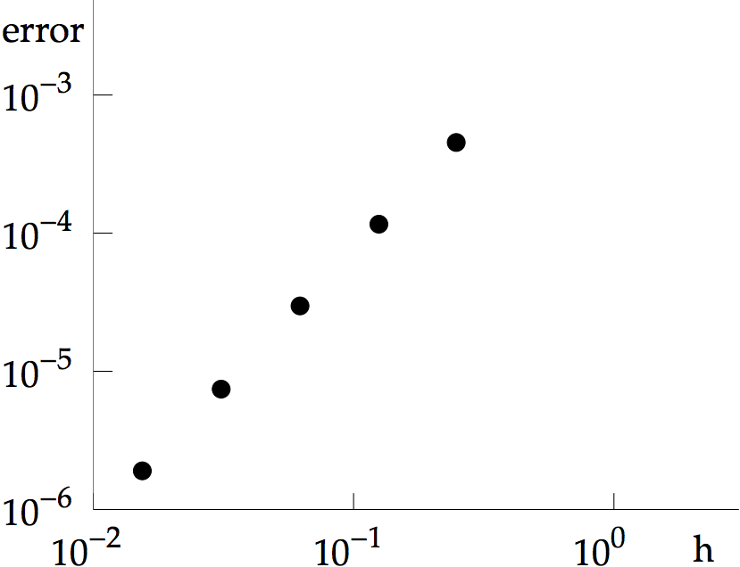
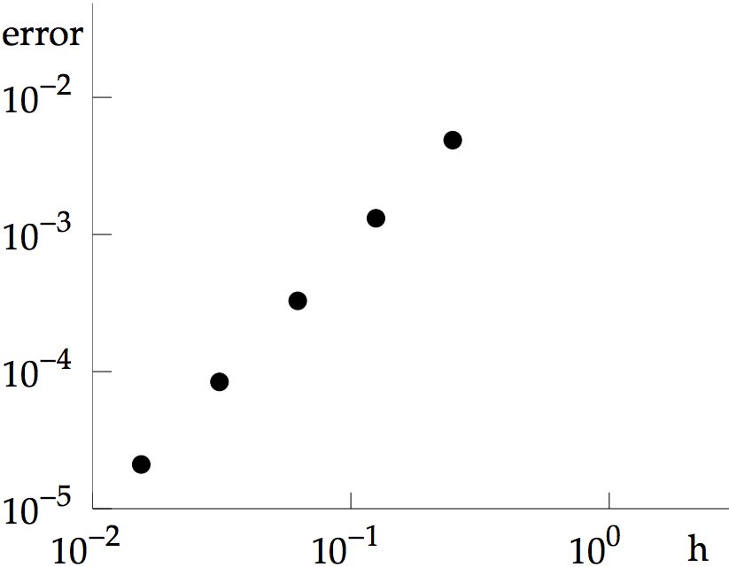

COMPUTER PROBLEMS 8.3
\(\def\ds{\displaystyle} \)
1
Program 8.5 can be used on the square \(0\leq x,y \leq 1\).
For the Laplace equation, the right-hand side is \(f(x,y)=0\).
The boundary conditions g1,g2,g3 and g4
in Program 8.5 are set to the given functions. The three-dimensional
plots from the mesh command follow.


3
Program 8.5 can be used on the square \(0\leq x,y\leq 1\) with
\(f(x,y)=0\).
The boundary conditions g1,g2,g3 and g4
in Program 8.5 are set to the given functions. The three-dimensional
plots from the mesh command follow.


5
Program 8.5 can be used on the square \(0\leq x\leq 2, 0\leq y\leq 1\) with
\(f(x,y)=0\). Setting \(h=k=0.1\) returns the hydraulic head as \(0.0114\), or
\(11.4\) meters, at \((x,y)=(1,1/2)\).
7 Using Program 8.5 to generate the solution and evaluating
at \((x,y)=(1/4,3/4)\), yields the tables
\[\text{(a)}\ \ \ \
\begin{array}{ccc}
h&k&w(1/4,3/4)&\text{error}\\
2^{-2}&2^{-2}& 0.072692& 0.005672\\
2^{-3}&2^{-3}& 0.068477& 0.001457\\
2^{-4}&2^{-4}& 0.067387& 0.000367\\
2^{-5}&2^{-5}& 0.067112& 0.000092\\
\end{array}\]
\[\text{(b)}\ \ \ \
\begin{array}{ccc}
h&k&w(1/4,3/4)&\text{error}\\
2^{-2}&2^{-2}& 0.673903& 0.059660\\
2^{-3}&2^{-3}& 0.629543& 0.015300\\
2^{-4}&2^{-4}& 0.618094& 0.003851\\
2^{-5}&2^{-5}& 0.615207& 0.000964\\
\end{array}
\]
9
The Finite Element Method Program 8.6 can be applied on
the square \(0\leq x,y \leq 1\) with \(f(x,y)=0\). Plotting with
the Matlab mesh command gives the following graphs.
11
The Finite Element Method Program 8.6 can be applied on
the square \(0\leq x,y \leq 1\) with \(f(x,y)=0\). Plotting with
the Matlab mesh command gives the following graphs.


13
The Finite Element Method Program 8.6 can be applied. Plotting with
the Matlab mesh command gives the following graphs.


15
Using Program 8.6 to generate the solution and
evaluating at \((x,y)=(1/4,3/4)\) yields the tables
\[\text{(a)}\ \ \ \
\begin{array}{ccc}
h&k&w(1/4,3/4)&\text{error}\\
2^{-2}&2^{-2}& 0.294813& 0.004528\\
2^{-3}&2^{-3}& 0.291504& 0.001219\\
2^{-4}&2^{-4}& 0.290596& 0.000311\\
2^{-5}&2^{-5}& 0.290363& 0.000078\\
\end{array}\ \ \
\text{(b)}\ \ \ \
\begin{array}{ccc}
h&k&w(1/4,3/4)&\text{error}\\
2^{-2}&2^{-2}& 1.202628& 0.003602\\
2^{-3}&2^{-3}& 1.205310& 0.000920\\
2^{-4}&2^{-4}& 1.205999& 0.000231\\
2^{-5}&2^{-5}& 1.206172& 0.000058\\
\end{array}
\]
17 Use Program 8.6 to generate the approximate solution for \(h=2^{-p}\) for \(p=2,\ldots, 6\), and calculate the error at each point. The maximum error is plotted below.

